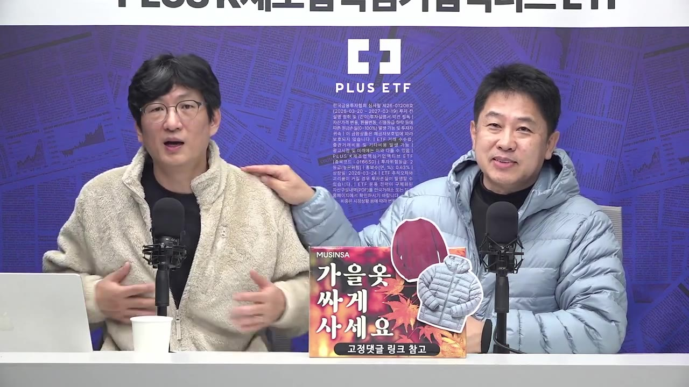
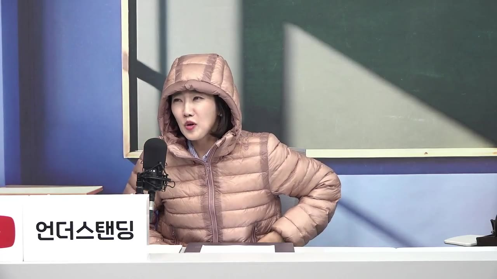
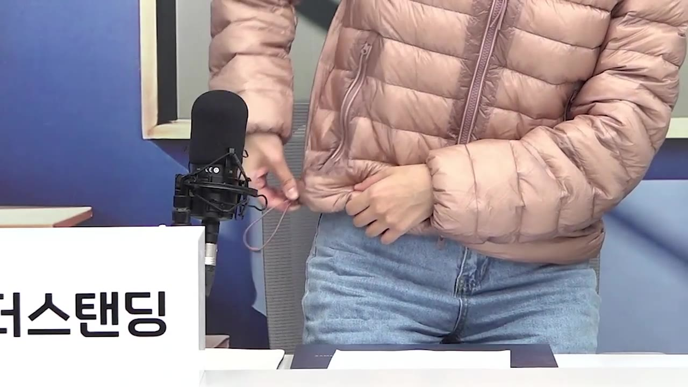
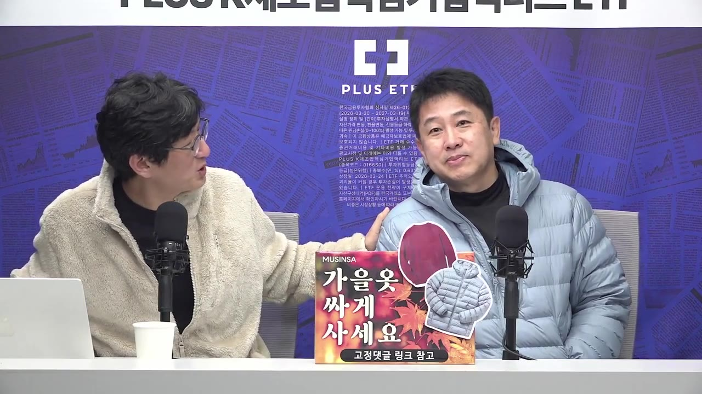

[언더상회] 땀나는 무신사 플리스 28,000원·오리털 패딩 68,700원! 요청 폭주로 딱 마지막 20% 앵콜 할인 (~11/1)
▶ 원본 영상 보기한눈에 보기
- 언더스탠딩 채널의 무신사 광고 영상으로, 앞서 진행한 할인 행사를 요청이 많아 11월 1일까지 한 번 더(앵콜) 연다고 알린다.
- 할인율은 남성 20%, 여성 15~20%라고 말한다(자막상 정확한 구분은 불분명).
- 플리스(fleece, 보송보송한 합성 털 원단 상의)는 28,000원이다. 잠깐 입었는데도 땀이 날 만큼 따뜻하다고 한다.
- 오리털 패딩은 자막상 "8만 원"이고 제목에는 68,700원으로 나온다. 솜털 80·깃털 20(자막상 "~같아요")에 아주 가볍다고 소개한다.
- 패딩의 특징으로 손목 시보리, 조임끈, 지퍼 두 개(투웨이 지퍼), 기모 처리한 지퍼 주머니, 하늘색·코랄빛 핑크 색상을 보여 준다.
이런 분께 도움이 됩니다
- 겨울 전에 싼 플리스나 오리털 패딩을 찾는 분. 4분짜리 광고를 보지 않고 가격·할인 기간·제품 특징만 빨리 확인할 수 있다.
핵심 내용
행사 조건
- 이 영상은 무신사 광고이고, 설명란 링크는 무신사 큐레이터 링크라 구매가 생기면 채널이 수수료를 받는다고 밝힌다. (0:16)
- 지난 행사가 끝난 뒤 "왜 이제 안 하냐"는 요청이 많아 마지막으로 한 번 더 연다고 한다.
- 할인율은 남성 20%, 여성 15%에서 20%까지라고 말한다. (0:39)
- 행사 기간은 11월 1일까지다. (0:48)
- 구매는 설명란 링크(무신사 큐레이터 숍)에서 한다.
💡 할인은 11/1에 끝난다 — 사려면 그 전에 링크로 들어가야 한다.
플리스 — 28,000원
- 안승찬 기자가 입은 플리스로, "동물 털을 입고 있다"고 할 만큼 따뜻하다고 소개한다.
- 잠깐 입고 있는데도 땀이 날 정도라고 한다.
- 가격은 28,000원이다. 출연자들은 "너무 싸다", "국민 패딩"이라고 평한다. (1:23)

오리털 패딩 — 가격과 충전재
- 출연자는 패딩 가격을 "8만 원"이라고 말한다. 영상 제목에는 68,700원으로 나온다(할인 적용가로 보이지만 영상에서 설명하지 않음). (1:34)
- 거위털(구스)이 아닌 오리털(덕다운) 패딩이고, 솜털 80·깃털 20인 것 같다고 말한다(자막상 단정하지 않음).
- 오리털은 보통 구스보다 무거워서 위에 코트를 겹쳐 입으면 뻑뻑하다고 한다. 하지만 이 제품은 "날아갈 만큼" 가볍다고 강조한다. (2:00)
- "가벼우면 춥지 않을까" 하는 걱정에는 "지금 땀이 난다"고 답한다.

패딩의 보온 디테일
- 손목 시보리(소매 끝의 쫀쫀한 고무 짜임)가 있어 찬바람이 덜 들어온다고 한다.
- 조임끈을 당기면 얼굴 주변을 조여 "눈만 보이게" 막을 수 있다고 시연한다(어느 부위의 끈인지는 자막상 불분명). (2:55)
- 투웨이 지퍼(위에서도, 아래에서도 여는 지퍼)가 있다. 앉을 때 아래쪽을 열면 옷이 울지 않고 모양도 난다고 설명한다. (3:15)
- 주머니는 지퍼형이고 안쪽이 기모 처리(안감을 보송하게 일으킨 것)되어 손만 넣어도 따뜻하다고 한다.

색상
- 오소장(어혜중)이 입은 색은 "고급진 하늘색"이라고 소개한다.
- 진한 블러셔 핑크가 아닌 코랄이 섞인 핑크도 있는데, 촌스럽지 않다고 한다. (3:54)

기억할 숫자·인용
- 플리스 28,000원 / 오리털 패딩 자막상 8만 원, 제목상 68,700원
- 할인: 남성 20%, 여성 15~20%, 기간은 ~11월 1일
- 충전재: 솜털 80 : 깃털 20(출연자 추정)
- "의식주 중에 살 게 뭐가 있어? 옷밖에 없잖아." (4:28)
생각해볼 점
- 유료 광고이고 수수료 링크다. "땀이 난다", "너무 싸다" 같은 말은 출연자의 주관적 평가다. 따뜻함이나 무게를 비교한 수치는 나오지 않는다.
- 브랜드·제품명, 충전량(그램), 사이즈, 세탁 방법은 영상에 나오지 않는다. 링크의 상품 페이지에서 직접 확인해야 한다.
- 패딩 가격이 자막(8만 원)과 제목(68,700원)에서 다르다. 결제 전에 실제 할인가를 확인하는 게 좋다.
바로 해볼 일
- 11월 1일 전에 설명란 링크(무신사 큐레이터 숍)에서 플리스·패딩의 실제 할인가와 남녀 할인율을 확인하기
- 상품 페이지에서 충전재 비율(80/20), 충전량, 사이즈표를 확인하고 지금 가진 패딩과 비교하기
- 같은 제품을 다른 곳에서 파는 가격과 비교해 보고 결정하기